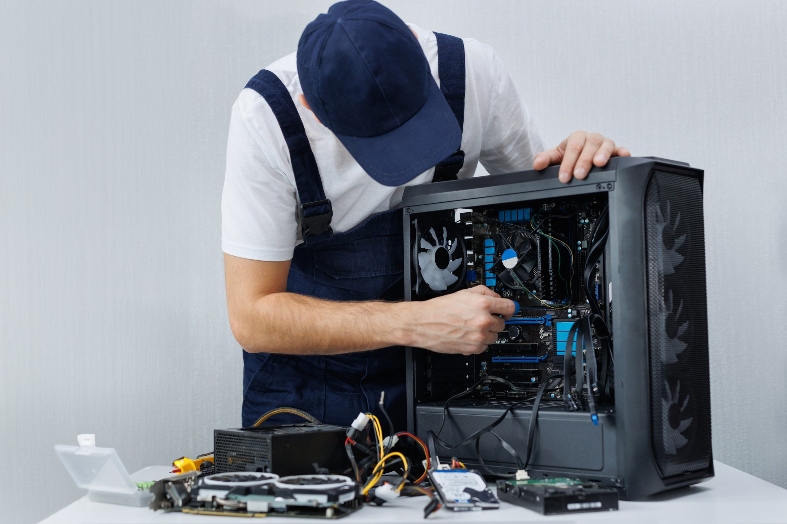
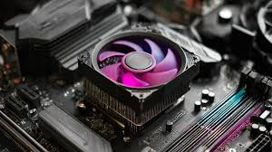

Servicios Especializados
En Compu Force ofrecemos soluciones completas para tu computadora, asegurando calidad, eficiencia y confiabilidad.

🖥️ Ensamblaje de PCs
Montamos equipos personalizados para gaming, oficina y profesionales, adaptados a tus necesidades.
- Equipos gamer de alto rendimiento
- PCs para edición de video y diseño
- Configuraciones de oficina y trabajo remoto

⚙️ Mantenimiento y Reparación
Revisamos, limpiamos y reemplazamos piezas, y diagnosticamos fallas para prolongar la vida de tu equipo.
- Limpieza de hardware
- Actualización de componentes
- Diagnóstico de fallas de software y hardware

🚀 Optimización de Rendimiento
Configuramos hardware y software para que tu equipo funcione más rápido y estable.
- Optimización del sistema operativo
- Mejora del arranque y velocidad
- Configuración avanzada para gaming y edición

💻 Soporte Técnico
Asistencia remota y presencial para resolver problemas de software, conectividad y configuración.
- Instalación de software y drivers
- Solución de errores y conflictos
- Soporte remoto o en tienda

📊 Asesoría Personalizada
Recomendaciones de componentes y mejoras según tus necesidades, presupuesto y objetivos.
- Recomendaciones de hardware
- Configuraciones ideales para tus objetivos
- Planes de actualización progresiva
🔒 Seguridad y Backup
Protección de datos, instalación de antivirus y planes de respaldo confiables para tu información.
- Instalación de antivirus y firewalls
- Planes de backup automático
- Protección de datos críticos